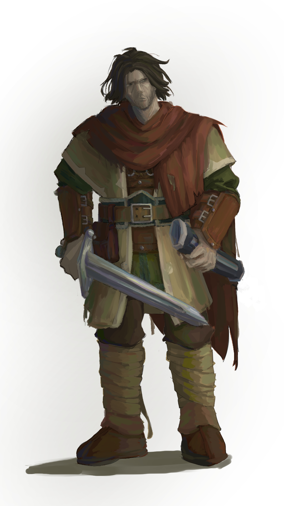
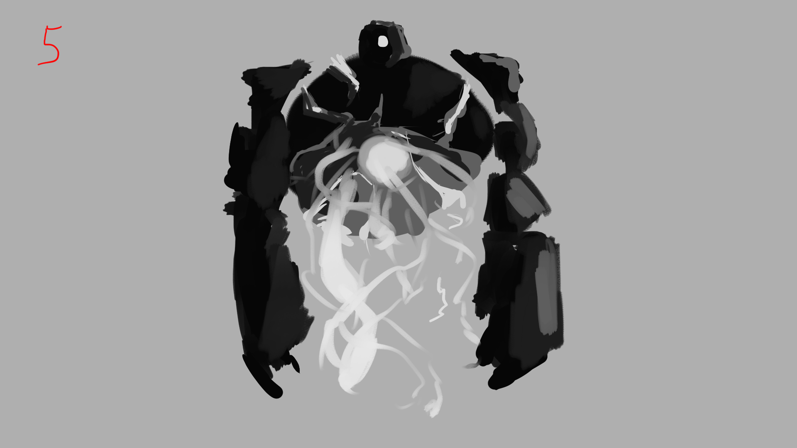
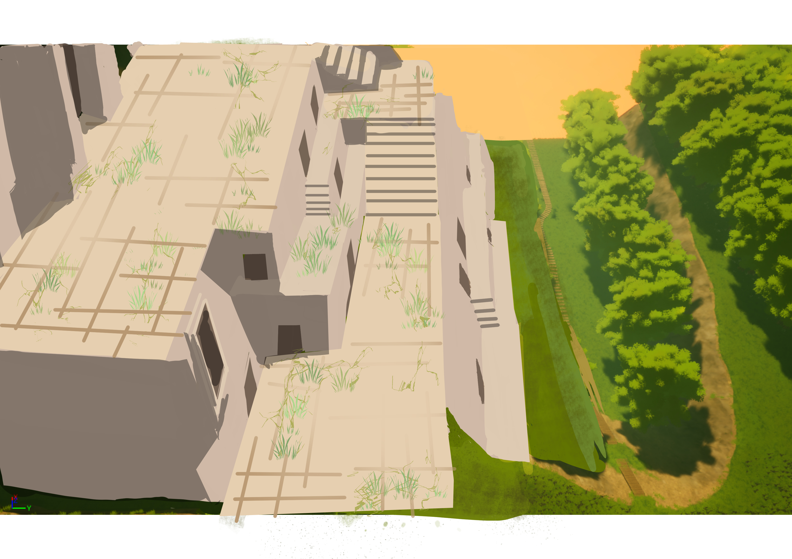

▶ YOUTUBE GAMEPLAY
▶ YOUTUBE GAMEPLAY畢業製作 · 2025UNREAL ENGINE 5
巨人與孤獨星球
沒落科技文明留下的泰坦巨人仍在星球肆虐。旅行者利用傳送寶石穿越遺跡，透過地形觀察、機關解謎與路線選擇逃脫巨大威脅。
CORE SYSTEM探索地形 → 讀取威脅 → 啟動機關 → 逃脫／反制 → 解鎖傳送門Jump Pad、壓力板、泰坦尺度、動態環境與材質音效
遊戲企劃製作人關卡流程UI / UX
ARCHIVE155 ITEMS
CHAPTERS06
VIDEOYOUTUBE
DESIGN PIPELINE角色 / 巨人 / 場景
概念草稿確定稿建模引擎整合實機展示


